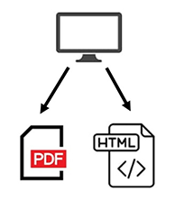

Traditionally, it was necessary to manage source files of PDF manuals and HTML manuals separately. This solution output PDF and HTML with the response web design from one source file.

If you create one manual data, you can output both HTML and PDF. Therefore, you do not need to create PDF and HTML separately, you can reduce costs.
Nowadays, due to distribution of services through the internet has become commonplace, HTML manuals are getting more important in various industries. And, with the spread of tablets and smartphones, multi-device compatibility is required. By customizing, this service can output responsive HTML.
In collaboration with Trados, Memsource which is the de facto standard as translation tool, this service can manage one-stop project on GitHub from creating manual to translation.
※ Markdown format corresponds to Memsource.